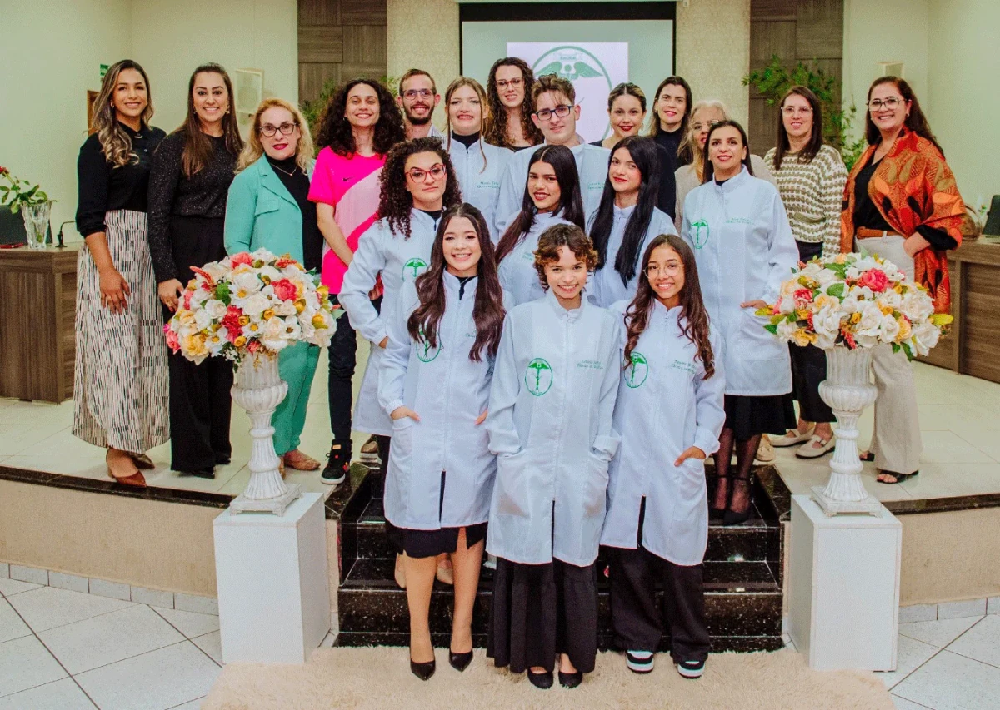

Técnico em Estética
O curso Técnico em Estética do Colégio Barbosa Ferraz é ideal para quem deseja atuar profissionalmente com cuidados de beleza, saúde e bem-estar. A formação é focada em procedimentos estéticos faciais, corporais e capilares, sempre com responsabilidade ética e conhecimento técnico.
Entre os conteúdos estudados estão: cosmetologia, anatomia e fisiologia humana, técnicas de limpeza de pele, massagens, tratamentos estéticos, biossegurança e atendimento humanizado ao cliente.
As aulas ocorrem em ambientes equipados com macas, produtos profissionais e espelhos, proporcionando experiências práticas e realistas. Além disso, os alunos participam de oficinas, feiras de beleza, palestras com especialistas da área e visitas técnicas a salões e clínicas.
O curso oferece uma excelente oportunidade para inserção no mercado de trabalho, podendo atuar em clínicas, spas, salões de beleza ou até abrir o próprio negócio.
 Voltar à Página Inicial